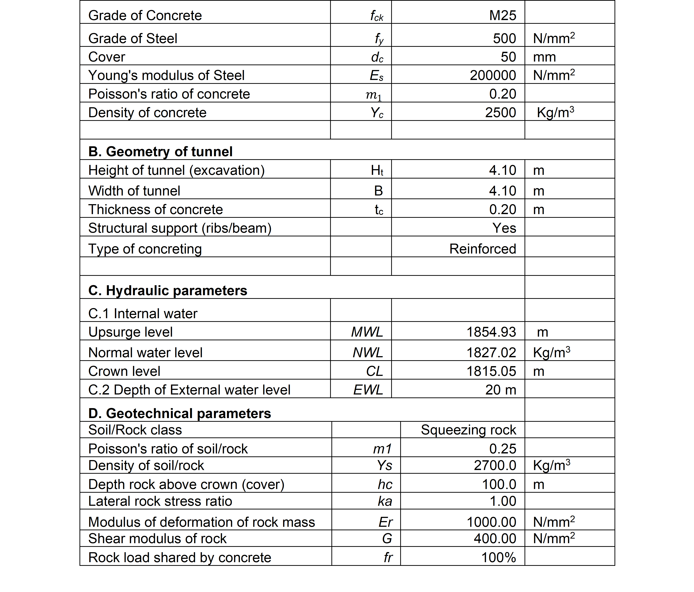
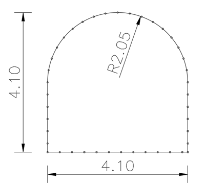
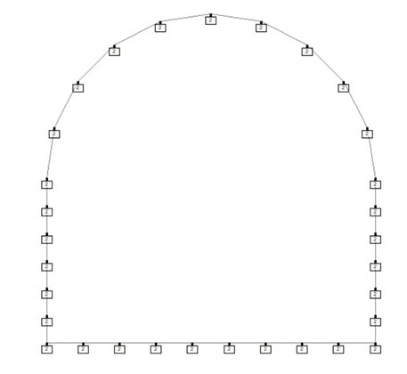
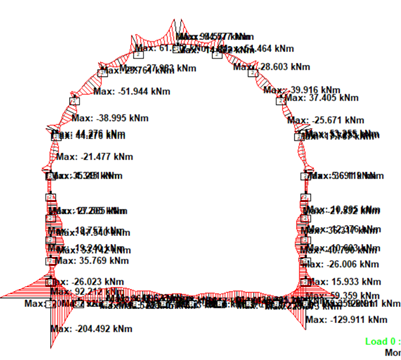
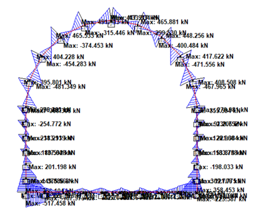

STRUCTURAL DESIGN OF A TUNNEL
Tunnel lining shall be designed based on IS 4880 (Part IV)-1971.
As per the code (Provided in 5. LOADING CONDITIONS), the design loading applicable to tunnel linings shall be classified as ‘Normal’ and Extreme’ loading conditions. Design shall be made for ‘Normal’ loading conditions and shall be checked for safety under ‘Extreme’ loading conditions
The design loads shall be as follows.
1. External rock loads.
Rock load may be assumed as an equivalent uniformly distributed load over the tunnel soffit over a span equal to the tunnel width or diameter.
Rock load shall be calculated based on the depth of rock above the crown given as follows.
If \(H_R\leq1.5(B+H_t)\), then \(H_P=H_R\).
Where,
\(H_R\) = Depth of rock above crown (Cover).
\(B\) = Width of tunnel
\(H_t\) = Height of tunnel
\(H_p\) = Designed depth of rock above crown
If \(H_R > 1.5 (B+H_t)\), then following tunnel for designed depth of rock shall be used.
| Rock Condition | Rock load, \(H_p\) | Remark |
| 1. Hard and intact | 0 | Light lining required only if spalling or popping occurs. |
| 2. Hard stratified or schistose | 0 to 0.5 \(B\) | Light support. |
| 3. Massive, moderately jointed | 0 to 0.25 \(B\) | Load may change erratically from point to point |
| 4. Moderately blocky and seamy | 0.25 B to 0.35 \((B+H_t)\) | No side pressure |
| 5. Very blocky and seamy | 0.35 B to 1.10 \((B+H_t)\) | Little or no side pressure |
| 6. Completely crushed but chemically intact | 1.10 \((B+H_t)\) | Considerable side pressure, softening effect of seepage towards bottom of tunnel. Requires either continuous support for lower ends of ribs or circular ribs |
| 7. Squeezing rock, moderate depth | (1.10 to 2.10) \((B+H_t)\) | Heavy side pressure, invert struts required, circular ribs are recommended |
| 8. Squeezing rock, great depth | (2.10 to 4.50) (\(B+H_t)\) | Heavy side pressure, invert struts required, circular ribs are recommended |
| 9. Swelling rock | 80m irrespective of value \((B+H_t)\) | Circular ribs required. In extreme cases use yielding support |
Strength factors of different types of rocks are given as follows
| Catagory | Strength Grade | Denotation of Rock (Soil) | Unit weight (kg/m3) | Crushing strength (Kg/cm2) | Strength factor (f) |
| I | Highest | Solid, dense quartzite, basalt and other solid rocks of exceptionally high strength | 2800-3000 | 2000 | 20 |
| II | Very high | Solid, granite, quartzporphyr, silica shale. Highly resistive sandstones and limestones | 2600-2700 | 1500 | 15 |
| III | High | 2500-2600 | 1000 | 15 | |
| IIIa | High | Limestones, weathered granite. Solid sandstone, marble | 2500 | 800 | 8 |
| IV | Moderately strong | Normal sandstone | 2400 | 600 | 6 |
| IVa | Moderately strong | Sandstone shales | 2300 | 500 | 5 |
| V | Medium | Clay-shales, Sand and Limestones of smaller resistance. Loose Conglomerates | 2400-2600 | 400 | 4 |
| Va | Medium | Various shales and slates Dense marl. | 2400-2600 | 300 | 3 |
| VI | Moderately loose | Loose shale and very loose limestone, gypsum, frozen ground, common marl. Blocky sandstone, cemented gravel and boulders, stoney ground | 2200-2600 | 200-150 | 2 |
| VIa | Moderately loose | Gravelly ground. Blocky and fissured shale, compressed boulders and gravel, hard clay | 2200-2400 | - | 1.5 |
| VII | Loose | Dense clay, cohesive ballast. Clayey ground | 2000-2200 | - | 1 |
| VIIa | Loose | Loose loam, loess, gravel | 1800-2000 | - | 0.8 |
| VIII | Soil | Soil with vegetation peat, soft load, wet land | 1600-1800 | - | 0.6 |
| IX | Granular soils | Sand, fine gravel, upfill | 1400-1600 | - | 0.5 |
| X | Plastic soils | Silty ground, modified looses and other soils in liquid condition | - | - | 0.3 |
2. Self-weight of lining
3. Design external water pressure
3.1 Normal design loading conditions
The difference of hydrostatic pressure between normal maximum ground water pressure and no internal pressure or difference in hydraulic gradient in the tunnel, under steady static condition and the maximum down surge under normal transient operation.
3.2 Extreme design loading conditions
Maximum difference in levels between hydrostatic gradients in the tunnel, under steady static condition and the maximum down surge under extreme transient operation or the difference between the hydraulic gradient and the tunnel invert level in case of tunnel empty condition.
4. Design internal water pressure
4.1 Normal design loading conditions
Maximum static conditions corresponding to maximum water level in head pond or loading equal to the difference in levels between the maximum upsurge occurring under normal transient operation and the tunnel invert.
4.2 Extreme design loading conditions
Loads equal to the difference between the highest level of hydraulic gradient in the tunnel under emergency transient operation and the invert of tunnel.
5. Grout pressures
Backfill grouting shall not be greater than 5kg/cm2. In case of pressure grouting, grout pressure shall be done maximum practical pressure.
6. Other loads
Formula for values of Bending moments, Normal thrust, radial shear, horizontal and vertical deflection of circular tunnel given in Table 3 to 7 (of code IS4880 Part IV) can be used. In the case of other sections, finite element analysis shall be carried out.

The notation of the formula below are as follows
\(E\) = Young’s modulus of the lining material
\(I\) = Moment of inertia of the section
\(K\) = intensity of lateral triangular load at horizontal diameter
\(P\) = Total rock load on mean diameter
\(r\) = internal radius of tunnel
\(R\) = mean radius of tunnel lining
\(t\) = thickness of lining
\(W\) = Unit weight of water
\(W_e\) = Unit weight of concrete, and
\(\phi\) = angle that the section makes with the vertical diameter at the Centre measured from invert

In the case of other shapes of tunnel including circular, finite element methods shall be carried out.
To model in finite elements, we have to provide subgrade reaction at the nodes of the structure. Subgrade reaction may be calculated by (As per EM 1110-2-2901)
\(\theta\) = Angle made by segments of arc of tunnel
Where,
\(D\) = Diameter of tunnel
\(n\) = number of arcs in a tunnel (semi-circle in D-shaped tunnel)
\(r=\frac{D}{2}\) = radius of tunnel
Radial subgrade reaction (Eq. 9-18 of EM 1110-2-2901)
Subgrade subgrade reaction at transverse direction (Eq. 9-18 of EM 1110-2-2901)
Where,
\(m_1\) = Poisson's ratio
Thes subgrade reactions shall be provided in the nodes of the structure. Then finite element software shall be used to calculate the moment in the lining. Using moments, reinforcement design or thickness of lining shall be verified.
EXAMPLE


A. Load Calculation
1. Rock Load
1.1 Vertical load coming at crown
Checking of \(1.5(B+H_t)\)
Tunnel cover
Since \(H_R\geq 1.5(B+H_t)\) following criteria shall apply.
For squeezing rock of moderate depth, using Table 1 of IS4880 (part IV), depth of rock above the tunnel is given by 1.10 to 2.10 \((B+H_t)\)
Take \(h = 2.1(B+H_t) = 2.1 (4.10+4.10) = 17.22m\)
Density of rock \(Υ_r = 2700 kg/m^3 \)
Rock load at crown
1.2 Lateral load
Lateral rock stress ratio, \(k_a=1.0\)
At crown
At Invert
2. Internal hydrostatic pressure
At normal condition
Head at normal condition
Internal pressure
At extreme condition (Upsurge in surge tank).
3. Hydrostatic pressure due to external water table
3.1 Weight at crown
3.2 Lateral load
Start at crown
\(F_{3s}=Υ_wh_{wo}=9.81×20=196.2kN/m^2\)
At the invert
\(F_{3s}=Υ_wh_{wo}=9.81×24.1=236.421kN/m^2\)
4. Ground reaction for self-weight of the lining
Area of tunnel lining
Weight of tunnel lining
Per unit weight
5. Ground reaction for water contained in tunnel
Cross sectional area of tunnel
\(F_5=Υ_wA_2=9.81×14.64=143.62kN\)
Per unit weight
A. Calculation of modulus of subgrade reaction
\(n\) = Number of segments in arc = 10
Radial stiffness coefficient
Tangential stiffness coefficient
B. Permissible stresses
Compressive strength of concrete
Tensile strength of concrete (IS 456:2000 Clause 6.2.2)
Tensile strength of steel
C. Finite Element analysis
STAADPro has been used for the analysis.

STAAD Output
Bending moment diagram

Shear force diagram

In this case, maximum stress is greater than permissible stresses, change thickness or grade of concrete or both.
Some other finite element software such as “Examine2D” can be used to determine the maximum moments and shear force in tunnel.